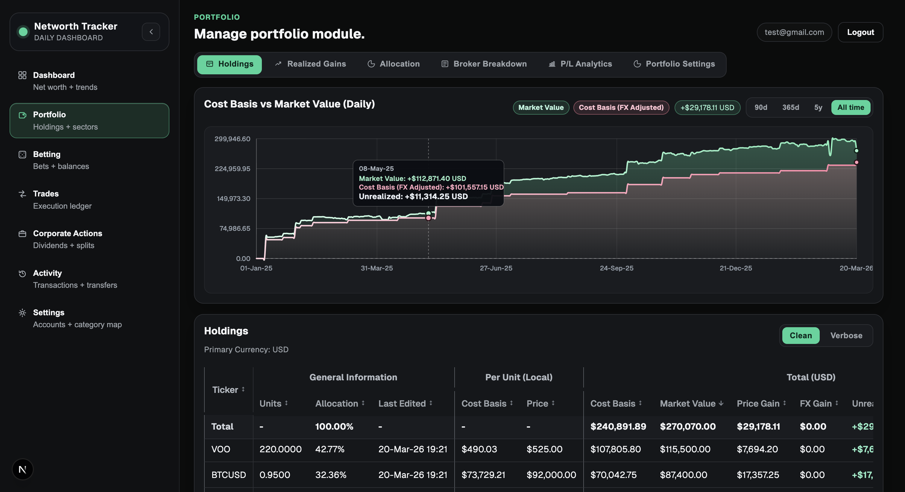
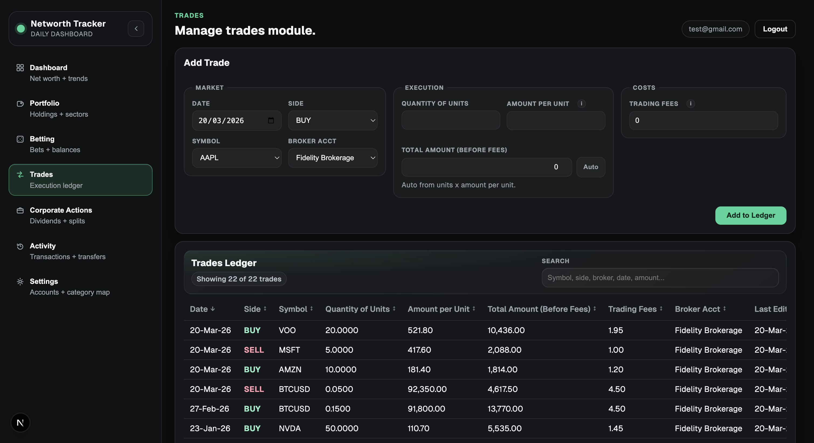

Networth Tracker
BetaA beta finance dashboard for tracking assets and net worth over time, built with Next.js, React, PostgreSQL, and Massive API data integrations.
- Next.js
- React
- PostgreSQL
- Massive API
Private beta